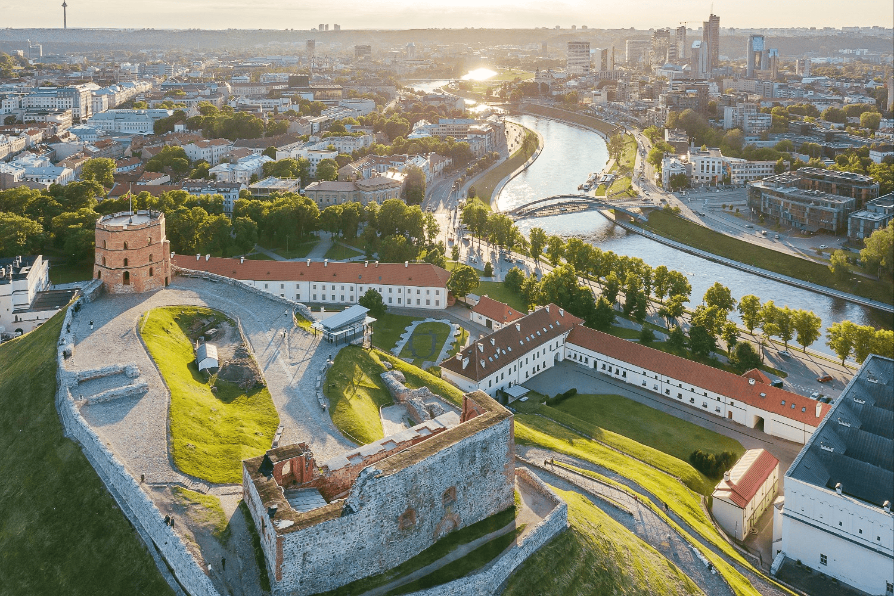
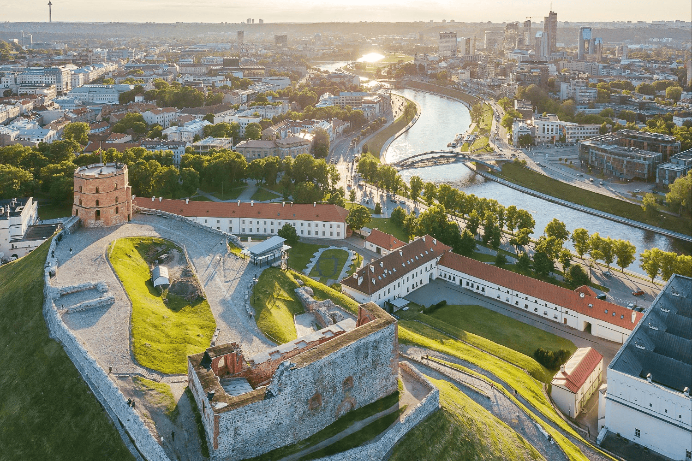

Explore Vilnius City
Gediminas Castle Tower
This symbol of Vilnius can be seen from many parts of the Old Town and is depicted in various works of art. Climbing Gediminas Hill or going even higher to the observation deck atop the tower offers a panoramic view of Vilnius' rooftops, church spires, and narrow streets. Inside the tower, you'll find a historical exhibition showcasing models of reconstructed Vilnius castles, weaponry, and iconography of old Vilnius.
You can either walk up the hill or take the funicular.
Tickets are sold at the ticket office near Gediminas Hill.
Address: Arsenalo g. 6, Vilnius, 01143 Vilnius m. sav
 

The Glass Quarter
The Glass Quarter was established in October 2018 in the area encompassing Stiklių, M. Antokolskio, Ganoo, and Žydų streets. The aim of the Glass Quarter community is to organize cultural routes, reveal the hidden stories of various Old Town locations, create traditions, improve the quarter's infrastructure, and attract investors—as well as locals and visitors—to enjoy their leisure time in a cultured way. Tucked away between the city's main streets, the quarter still houses jewelers, local artists, artisan shops and workshops, cozy restaurants, a chamber orchestra, art galleries, and one of the oldest still-operating hotels—Hotel "Stikliai."
Entrance is free of charge.
Address: Stiklių g., Vilnius, 01131 Vilnius m. sav
The Republic of Užupis
Užupis is a republic of artists, often compared to Paris’s Montmartre or Copenhagen’s Christiania. It is known for its own anthem, constitution (which can be read at the beginning of Paupio Street, written on a wall), president, and even a bishop. The district is home to one of Vilnius’s oldest cemeteries—Bernardine Cemetery—two churches, and is crowned by the iconic bronze Angel of Užupis.
This is one of the oldest neighborhoods in Vilnius, mentioned in historical records as early as the 16th century. In the past, it was alive with the turning wings of numerous mills and served as a poor suburb, mainly inhabited by craftsmen. At one point, a red-light district was also located nearby.
Entrance is free of charge.
Vilnius Cathedral Basilica of St. Stanislaus and St. Ladislaus and Cathedral Square with the Bell Tower
Vilnius Cathedral Basilica of St. Stanislaus and St. Ladislaus and Cathedral Square with the Bell Tower This sacred site is a symbol of Lithuania’s Christianization. The Cathedral Basilica, built in the very heart of the city on the site of a former pagan temple next to the city’s defensive castle, has always been the most peaceful and attractive location in the history of Vilnius. The remains of Saint Casimir – the patron of Lithuania and youth – rest in Vilnius Cathedral. Blessed Jurgis Matulaitis served as bishop here between 1918 and 1925. On September 4, 1993, Pope John Paul II began his historic apostolic journey through Lithuania with a prayer at the Cathedral.
Cathedral entrance is free of charge. Tickets for the bell tower can be purchased on-site or in advance online.
Address: Šventaragio g. 1, Vilnius, 01143 Vilnius m. sav.
The Hill of Three Crosses
The white reinforced concrete memorial of the Three Crosses is visible from afar. Once you climb the hill, you’ll be rewarded with stunning panoramic views of Vilnius Old Town. At the foot of the hill lies Bernardine Garden, with the Vilnelė River flowing nearby. The 12-meter-tall monument has become a symbol of national identity, but today it is often illuminated in different colors to commemorate significant events in Lithuania and around the world.
Entrance is free of charge.
Address: Kalnų parkas, 01100 Vilnius
The St. Anne’s and Bernardine Complex
Barcelona has its pride – the Sagrada Familia, and Vilnius has its own – St. Anne’s Church. Almost unchanged over five centuries, the church is one of the most beautiful and probably the most famous examples of late Gothic architecture. A true gem of Gothic construction, surrounded by many legends. This is famous in all the major Napoleon Bonaparte sayings, as well as church chronicles. The French ruler, who passed through Vilnius in 1812, is said to have told his men that he would like to carry the church back to Paris. Next to the church stands its bell tower built in the 19th century, which imitates the Gothic style. It can be confidently stated that St. Anne’s Church has become a mini-square symbol of Vilnius.
The entrance to St. Anne’s Church is free of charge. The church is open to visitors from 16:30 to 19:00
Address: Maironio g. 8, Vilnius, 01124 Vilniaus m. sav.
The Energy and Technology Museum with a rooftop terrace offering a panoramic view of the Old Town
The first public power plant in Vilnius today attracts passersby’s attention more than ever and breaks traditional museum stereotypes. The expanded museum exhibition, dedicated to energy, allows visitors to get acquainted with authentic equipment from the power plant that was recently operational. Walking between steam boilers, turbines, generators, condensers, and complex piping systems offers a sense of the atmosphere of such industrial sites. On the museum’s rooftop terrace, visitors can enjoy an impressive and photogenic view of the city’s Old Town panorama.
Tickets to the museum can be purchased at the ticket counters on-site or online
Address: Rinktinės g. 2, Vilnius, 09312 Vilniaus m. sav
Auto Museum
A world-class museum of historic cars welcomes you just beyond the Old Town, in the legendary Vilnius taxi park. Upon arrival, you’ll see unique and rare representatives of automobile evolution. Each vehicle tells its own story and transports you to different moments in world history. It is the largest collection of its kind in Lithuania. The exhibits have come from all over the world, making this an experience you don’t want to miss. The exhibition features more than 100 cars – from the earliest motor vehicles to modern supercars.
Tickets to the museum can be purchased at the ticket counters on-site or online
Address: Sklėrių k., Vilnius, 07137 Vilniaus m. sav
Literatų Street
Literatų Street always attracts great interest from both Lithuanian and foreign tourists, making it undoubtedly one of the most visited spots in Vilnius Old Town. It is believed that the street received its name in the first half of the 19th century in honor of the writer Adam Mickiewicz, who once lived at the beginning of the street. This is marked by three plaques on a building wall with inscriptions in Lithuanian, Russian, and Polish.
Entrance is free of charge.
TV Tower
The Vilnius TV Tower is the tallest structure in Lithuania and proudly ranks among the tallest television towers in the world. It is the 8th tallest in Europe and 26th globally, standing at an impressive height of 326.5 meters.
This sky-piercing structure is not only one of Lithuania’s most iconic landmarks but also a powerful symbol of the country’s fight for freedom. As one of the nation’s most distinctive buildings, the TV Tower holds the status of a major attraction. Visitors can enjoy breathtaking views of Vilnius and its surroundings from the 67th-floor bistro-bar “Paukščių takas” or the 68th-floor business and leisure lounge “Debesys.” During the season, an open-air terrace offers a limitless feeling of height, and thrill-seekers can test their courage by walking along the edge of the tower’s bowl—170 meters above the ground. Dare to try it!
Tickets to the TV tower can be purchased at the ticket counters on-site or online
Address: Sausio 13-osios g. 10, Vilnius, 04347 Vilniaus m. sav.
Bernardine Garden
Bernardine Garden, formerly known to locals as Sereikiškės Park, is located in the very heart of Vilnius—nestled between the Gediminas Castle Tower, the Vilnelė River, and the Bernardine Monastery. A special area of the park features a botanical exhibition that commemorates the 18th-century Vilnius University Botanical Garden, once one of the largest gardens in Eastern Europe. Near the entrance from St. Bruno Street, you’ll find Vilnius’ oldest oak tree, estimated to be around 400 years old. The park also offers cozy cafés and food trucks, making it a perfect spot to relax and enjoy the surroundings.
Entrance to the park is free of charge.
Address: Barbora Radvilaitės g. 8A, Vilnius, 01143 Vilniaus m. sav
Vingis Park
Vingis Park is a favorite spot for Vilnius residents to walk, cycle, or skate. At the heart of the park is an open-air stage that hosts a variety of events, including concerts and holiday celebrations. In 1988, the stadium near the stage was the site of major Sąjūdis movement rallies, and in 1993, Pope John Paul II held a mass there. The park features cozy cafés and bars that add vibrancy to its atmosphere.
Address: M. K. Čiurlionio g. 100, Vilnius, 03100 Vilniaus m. sav
Chiune Sugihara Sakura Park and White Bridge Leisure Area
To commemorate the 100th anniversary of Japanese diplomat Chiune Sugihara, a cherry blossom alley of 200 Japanese sakura trees was planted in his honor on October 2, 2001. Located on the right bank of the Neris River, near the National Gallery of Art, this Japanese sakura park bursts into pink bloom each May, becoming a magnet for city residents and visitors alike.
Next to the White Bridge, locals love to spend their summer evenings in a lively atmosphere. The area is buzzing with activity—sports courts, bars, cafés, and water sports make it a vibrant hub of city life.
Entrance is free of charge.